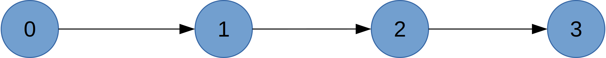
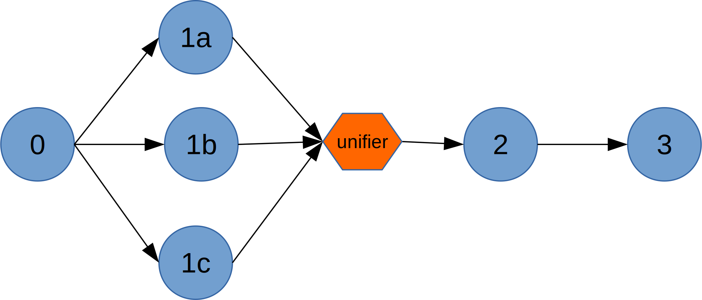
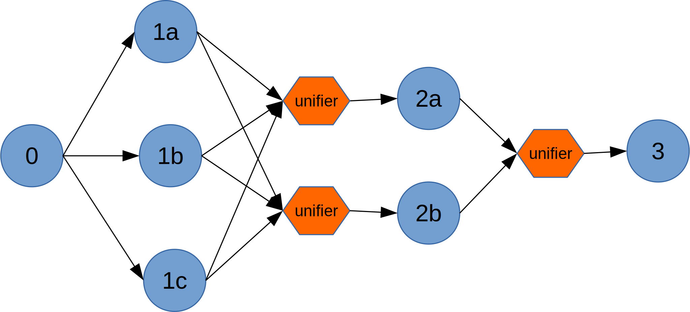
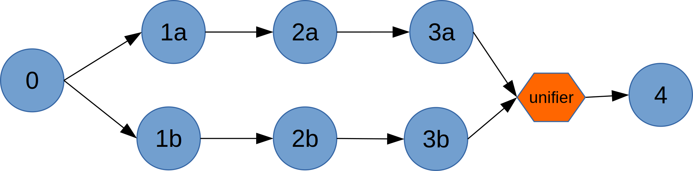

Partitioning
Partitioning is a mechanism for load balancing and scaling. When the volume of tuples entering the input port(s) of an operator is very high, the operator may not be be able to cope, resulting in increased latencies and reduced throughput. In such situations, the platform provides multiple mechanisms to replicate the operator so that the load can be shared by all the replicas. These replicas can run as separate processes on separate nodes (assuming the cluster has adequate resources) thus yielding, potentially, a near-linear speedup. The replicas are often referred to as partitions of the operator.
Partitioning introduces a number of specialized terms: static partitioning, MxN partitioning, parallel partitioning, dynamic partitioning, stateless partitioning, unifiers, cascading unifiers, stream codecs, logical DAG, and physical DAG. These terms will be explained in the sections that follow. We begin with a brief conceptual description of the various terms and then get into the specific mechanisms that developers can use to enable, configure and trigger partitioning.
No Partitioning
On rare occasions, we may want to prevent an operator from being partitioned (for
example, if the operator creates a connection to an external system, and multiple
such connections are undesirable). This is done by explicitly adding the
annotation @OperatorAnnotation(partitionable = false)
to the operator.
Static Partitioning
When the expected input volumes are reliably known in advance, the number of partitions needed for an operator to process that flow at speed can be precomputed and specified as part of the application configuration. The platform will create the desired number of partitions before application launch and this number does not change thereafter. This is called static partitioning.
In the presence of partitioning, the DAG as embodied by the running application clearly differs from that specified by the application writer: for one thing, there are replicas of one or more operators running; secondly, since the original computation defined as part of a single operator is now performed by multiple partitions, each partition can only compute partial results since it only sees part of the input stream; these partial results need to be stitched together somehow downstream of all the partitions. This is the function of a unifier. Application developers can optionally supply a unifier with custom logic (see below) to perform this unification; if none is provided, the platform will insert a default pass-through unifier.
To reflect these differences, we use the term logical DAG to refer to the original version and physical DAG to refer to the version that is embodied by the running application. For example, consider an application that has 4 operators connected in a linear sequence; the logical DAG looks like this:
 Logical DAG
If operator 1 is partitioned into 3 replicas, the physical DAG looks like this:

Physical DAG
MxN Partitioning
When two consecutive operators A and B are partitioned respectively into M and N partitions, each group of partitions needs, as noted above, a unifier. In such scenarios, there is potential for the unifiers themselves to become a bottleneck since they are handling all of the output data from the partitions of A or B. To mitigate this situation for A, the platform creates as many unifiers as there are partitions of B thus spreading the unification load across multiple unifiers. If the unifier for B is overloaded, the platform can be directed to create multiple replicas of that unifier, cascading into multiple levels if necessary to limit the number of input streams entering a single replica. This situation is called MxN partitioning and is illustrated by the following diagram where operators 1 and 2 respectively have 3 and 2 replicas.
 MxN Partitioning
Parallel Partitioning
Sometimes, when an operator is partitioned, it is appropriate to replicate an entire linear segment of the DAG that is immediately downstream of that operator; this is called parallel partitioning and is typically done to avoid the shuffling of data that happens with MxN partitioning. The streams of each partition are then kept segregated for the duration of that linear segment. In such cases, if the stream volume substantially reduces at the end of the linear segment, network bandwidth consumption can also be significantly reduced by using CONTAINER_LOCAL or NODE_LOCAL locality for the streams within that segment.
Parallel partitioning is accomplished by setting an attribute of the input port of each operator that is part of the linear segment. Doing this for operators 2 and 3 and partitioning 1 into two replicas results in the following physical DAG:
 Parallel Partitioning
It is important to note that if an operator is connected to multiple downstream operators (via multiple ports), the parallel partitioning flag need not be set the same way on all the downstream operator ports. For example, assume operator A is connected (directly) to B and C and the flag is set on the input port of C but not B. If we create 2 partitions of A, we will see 2 partitions of C but only one of B.
Dynamic Partitioning
When the volume of data flows in a stream are not known in advance, using a fixed number of partitions is suboptimal: if the number is too large for the flows actually encountered, we end up consuming cluster resources needlessly; if too small, the original goal of removing bottlenecks remains unaccomplished.
In such cases, the appropriate number of partitions needs to be determined based on observed latencies, throughput values or some custom performance metrics at runtime and the operator partitioned accordingly. This is called dynamic partitioning and is supported by the platform (discussed further below).
Stateless Partitioning
When an operator has no state (computed data that needs to persist across streaming
window boundaries) dynamic paritioning is relatively simple -- the newly created
partitions simply initialize themselves in the setup and activate callbacks
and proceed to process inbound tuple flows. This is the case with static partitioning
as well since there is no state to worry about when an application is starting.
However, when partitioning dynamically (at runtime), if the operator replicas have some state (for example, a set of files that have already been processed), this state needs to be redistributed across the new set of partitions in some application-specific way in order to preserve proper semantics (for example, that file set needs to be replicated in all of the new partitions to ensure that those files are not reprocessed). Partitioning that ignores operator state is called stateless partitioning.
Triggering and Configuring Parititioning
Partitioning is typically achieved in one of two ways:
- Create a custom partitioner class (or use one of the predefined ones) that implements
the
Partitionerinterface and specify it in the configuration file as thePARTITIONERattribute of the operator. - Implement the
Partitionerinterface in the operator itself and provide a suitabledefinePartitionsmethod with appropriate logic to create and return the new set of partitions. If dynamic partitioning is desired, a closely related interface (discussed below)StatsListenermust also be implemented.
We've already mentioned above the use of the @OperatorAnnotation(partitionable = false)
annotation to disable partitioning. In the absence of this annotation, one of the simplest
ways of triggering stateless partitioning is to use the the StatelessPartitioner class
that is provided in Apex (core) by adding the following fragment to the configuration file
(no code changes are needed):
<property>
<name>dt.application.{appName}.operator.{opName}.attr.PARTITIONER</name>
<value>com.datatorrent.common.partitioner.StatelessPartitioner:2</value>
</property>
Here, {appName} and {opName} are the appropriate application and operator names) and the number after the colon specifies the number of desired partitions.
This partitioner, as the name implies, ignores state and is intended for static partitioning. A couple of other stateless partitioners are provided in the Malhar library and are discussed in a later section below.
Setting the parallel partition flag on the input port of an operator is done via a snippet in the configuration file:
<property>
<name>dt.application.{appName}.operator.{opName}.inputport.{portName}.attr.PARTITION_PARALLEL</name>
<value>true</value>
</property>
When implementing a custom partitioner or implementing the interface directly as part of
the operator, there are two methods that need to be implemented: The first is the
partitioned method that is invoked by the platform to inform the operator that some
change to the partitioning has occurred:
void partitioned(Map<Integer, Partition<T>> partitions);
The argument is the new set of partitions. Often, an empty implementation or one that
emits suitable log messages suffices. The more important one is the definePartitions
method:
Collection<Partition<T>> definePartitions(Collection<Partition<T>> partitions,
PartitioningContext context);
The argument is the current collection of partitions and the method should return the desired new collection. Any number of existing partitions may be added to the returned collection. Existing partitions that are not in the result will be killed; those that are in both will be left untouched. New ones will be created and deployed.
This method is invoked by the platform at application launch to determine the
initial set of partitions; thereafter, it will be invoked whenever the response
of the processStats method of StatsListener returns with the repartitionRequired
field set to true.
A typical implementation skeleton of this method for the MyOperator class might
look like this:
Collection<Partition<MyOperator>>
definePartitions(Collection<Partition<MyOperator>> existing,
PartitioningContext context)
{
// collect state (if any) from existing partitions
int newPartitionCount = ...;
Collection<Partition<MyOperator<T>>> result = new ArrayList<>(newPartitionCount);
for (int i = 0; i < newPartitionCount; ++i) {
MyOperator op = new MyOperator();
// initialize op suitably
result.add(op);
}
return result;
}
StatsListener
The StatsListener interface can, analogously to the Partitioner interface, either
be implemented by a standalone class or by the operator itself; its only method is:
Response processStats(BatchedOperatorStats stats);
Within this method, which is invoked at regular intervals by the platform (currently once
per second), various operators metrics are made available; based on these metrics, the
method should return a Response object with the repartitionRequired field set to true
if a repartition is required, false otherwise. For example, here is a simple
implementation of this method with the actual test stubbed out:
@Override
public Response processStats(BatchedOperatorStats batchedOperatorStats)
{
Response res = new Response();
res.repartitionRequired = false;
if ( ...use appropriate test... ) {
LOG.info("processStats: repartitioning");
res.repartitionRequired = true;
}
return res;
}
The platform will then invoke the definePartitions method of the operator (or its
partitioner) if the repartitionRequired field is true.
Example operators that implement both StatsListener and Partitioner interfaces are
AbstractFileInputOperator and AbstractKafkaInputOperator.
Stream Codecs
When a downstream operator is partitioned, tuples leaving the output port of the upstream
operator are distributed to the partitions based on their hashCode. If the distribution
needs to be done based on a specific field (or combination of fields) of the tuple, a
custom StreamCodec needs to be created and attached as the value of the STREAM_CODEC
attribute of the input port of the partitioned operator.
An example scenario that needs a custom StreamCodec is the following: Suppose we have 2 downstream partitions and our tuples are transaction records that contain a country code. Suppose further that roughly half the transactions occur in one country and the rest are distributed across a number of other countries. A custom StreamCodec would allow us to funnel each of these 2 groups of tuples to different partitions, thus evenly distributing the load.
The StreamCodec interface has 3 methods, 2 for customizing the serialization and deserialization and the third for customizing tuple delivery:
Object fromByteArray(Slice fragment); // deserialize
Slice toByteArray(T o); // serialize
int getPartition(T o); // determine destination partitions
For convenience, the platform provides a concrete class KryoSerializableStreamCodec
which provides implementations of all 3 methods (but the implementation of the
getPartition method is the same as the default -- it just uses the tuple hashCode),
so the easiest way to create a custom codec is to extend this class. For the example
outlined above, the StreamCodec definition might look like this (assuming the high
frequency country code is "XYZ"):
public class CountryCodec extends KryoSerializableStreamCodec<Transaction> {
@Override
public int getPartition(Transaction tuple) {
String country = tuple.getCountryCode();
return ("XYZ".equals(country) ? 0 : 1;
}
}
This codec would be used in the populateDAG method as follows:
MyOperator oper = dag.addOperator("downstream", new MyOperator());
CountryCodec codec = new CountryCodec();
dag.setInputPortAttribute(oper.in, PortContext.STREAM_CODEC, codec);
// assuming the input port in MyOperator is called "in"
Partition Keys
TBD
Built-in Partitioners
In addition to the StatelessPartitioner already mentioned, the Malhar library provides
a couple of other stateless partitioners:
StatsAwareStatelessPartitioner : The is an abstract class that requires a concrete
implementation of the getLoad abstract method which should examine current metrics
and, for each partition, return -1, 0 or 1 according as the partition is underloaded,
properly loaded or overloaded. Based on these results, overloaded partitions will be
split and underloaded partitions will be combined. A concrete extension is provided
by the partitioner discussed next.
StatelessThroughputBasedPartitioner : This partitioner is an extension of the
StatsAwareStatelessPartitioner mentioned above. It can be configured so that it
increases or decreases the number of partitions as appropriate to
ensure that the throughput is between a defined range. It also implements the
StatsListener interface. Currently, it must be configured from Java code in the populateDAG
method of the StreamingApplication interface, for example:
MyOperator op = dag.addOperator("myop", MyOperator.class);
StatelessThroughputBasedPartitioner<MyOperator> p = new StatelessThroughputBasedPartitioner<>();
p.setCooldownMillis(10000);
p.setMaximumEvents(30000);
p.setMinimumEvents(10000);
dag.setAttribute(op, OperatorContext.STATS_LISTENERS, Arrays.asList(new StatsListener[]{p}));
dag.setAttribute(op, OperatorContext.PARTITIONER, p);
This code will dynamically repartition MyOperator based on throughput (a moving average
of the number of tuples moving through the operator per second). If the throughput of an
individual operator partition exceeds 30000 it will be split into two or more partitions;
if it falls below 10000 for a set of adjacent partitions, that set will be combined into a
single partition. The CooldownMillis parameter of 10000 milliseconds is used as the
observation interval for throughput computation.
Unifiers
As mentioned earlier, in the presence of partitioning, a unifier is required to combine the the partial results computed by the individual partitions to form the final result.
For example, suppose an operator is processing numbers and computes the sum of all the values seen in a window. If it is partitioned into N replicas, each replica is computing a partial sum and we would need a unifier that computes the overall sum from these N partial sums. A sample application that shows how to define and use a unifier is available here.
A unifier for an operator is provided by a suitable override of the getUnifier() method
of the output port, for example:
public final transient DefaultOutputPort<HighLow<Integer>> out
= new DefaultOutputPort<HighLow<Integer>>() {
@Override
public Unifier<HighLow<Integer>> getUnifier() {
return new UnifierRange<Integer>()
}
}
A unifier is an instance of a class that implements the Unifier interface; that
interface extends the Operator interface and adds just one additional method:
void process(T tuple);
A unifier therefore is also an operator and so all the usual callback methods such as
beginWindow and endWindow are available to override. It differs from a normal operator
in a couple of ways:
- It is not explicitly created as part of the DAG in the
populateDAGmethod. - It should define no input ports -- an input port will be automatically supplied by the platform and connected to the appropriate output ports of the upstream partitions.
- It must define an output port which will be automatically connected to the input port of the downstream operator.
- It should handle incoming tuples in the
processmethod where it can immediately emit appropriate tuples on the output port or aggregate the information in local variables for emitting later (in thebeginWindoworendWindowcallbacks for example).
If no unifier is supplied for a partitioned operator, the platform will supply a default pass-through unifier.
When the number of partitions is large and the unifier involves non-trivial computations
there is a risk that it can become a bottleneck; in such cases, the UNIFIER_LIMIT
attribute can be set on the appropriate output port. The platform will then automatically
generate the required number of parallel unifiers, cascading into multiple levels if
necessary, to ensure that the number of input streams at each unifier does not exceed
this limit.